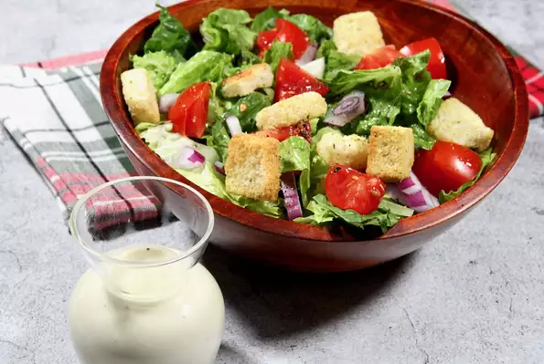

Home
Lemon Tahini Dressing Lemon Tahini Dressing

Description:
This tangy, classic dressing with a hint of sesame is ready in 5 minutes. Not only tasty on a salad, but drizzle it over roasted or grilled veggies, just about any side dish.
Ingredients:
- ½ lemon, juiced
- 3 tablespoons tahini paste
- 2 tablespoons olive oil
- 2 tablespoons water
- 1 clove garlic, roughly chopped
- ½ teaspoon salt
- ¼ teaspoon freshly ground black pepper
Steps:
- Combine lemon juice, tahini, olive oil, water, garlic, salt, and pepper in a mini food processor or blender; process until pureed and smooth.
- If dressing is too thick, add 1 teaspoon water and blend to thin. Continue adding water by the teaspoon until you reach your desired consistency.